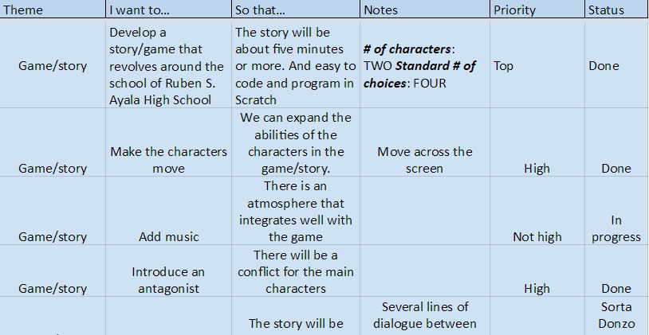
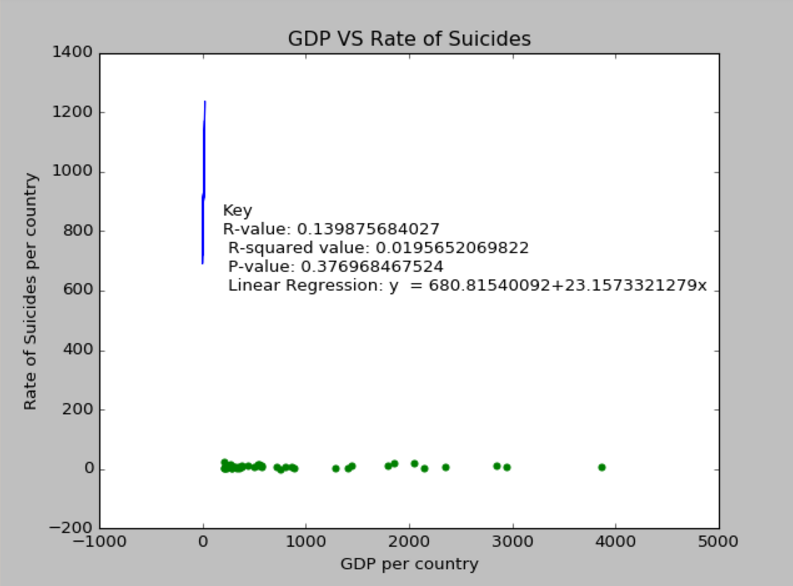
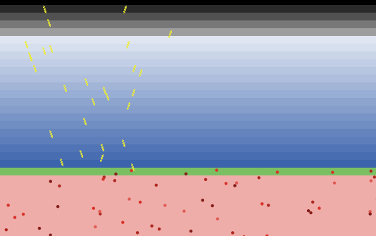

Home Portfolio
Myron's (secret) Lair!
Assignment Title: Scratch project. This assignment focuses on building the fundamentals of Scratch, an website that introduces new programmers to coding and its formatting.
A scratch story, with a game to it. It features me and my partner as the main characters who strive to save Ayala high from danger
Click on this to go to my product backlog for the scratch story project above.

A project where we take the IED program, repl.it, and we construct an interactive code/program in conjunction with another English or writing project.

The Flow chart for the aforementioned repl.it project that breaks down the code step by step.

A python project where me and my partner, Liam, formulate a code for an age-old card game, Gin Rummy!
A data project where my partner and I looked into the correlation between Gross Domestic Product and Suicide rates.
A project where my partner and I edited a simulation based off of climate change